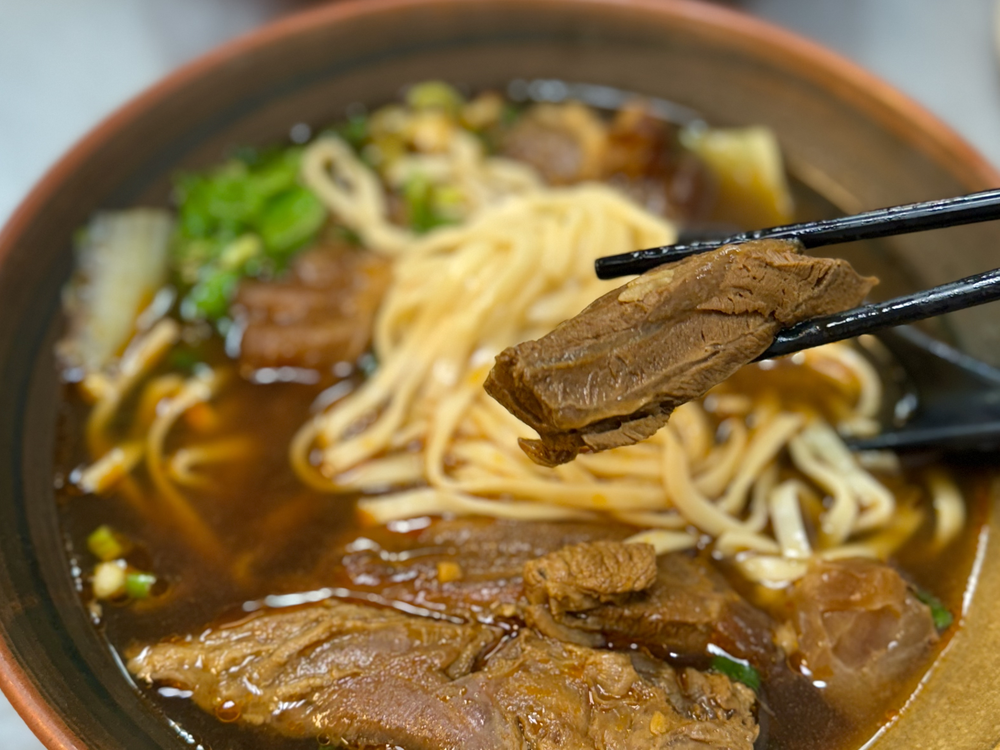
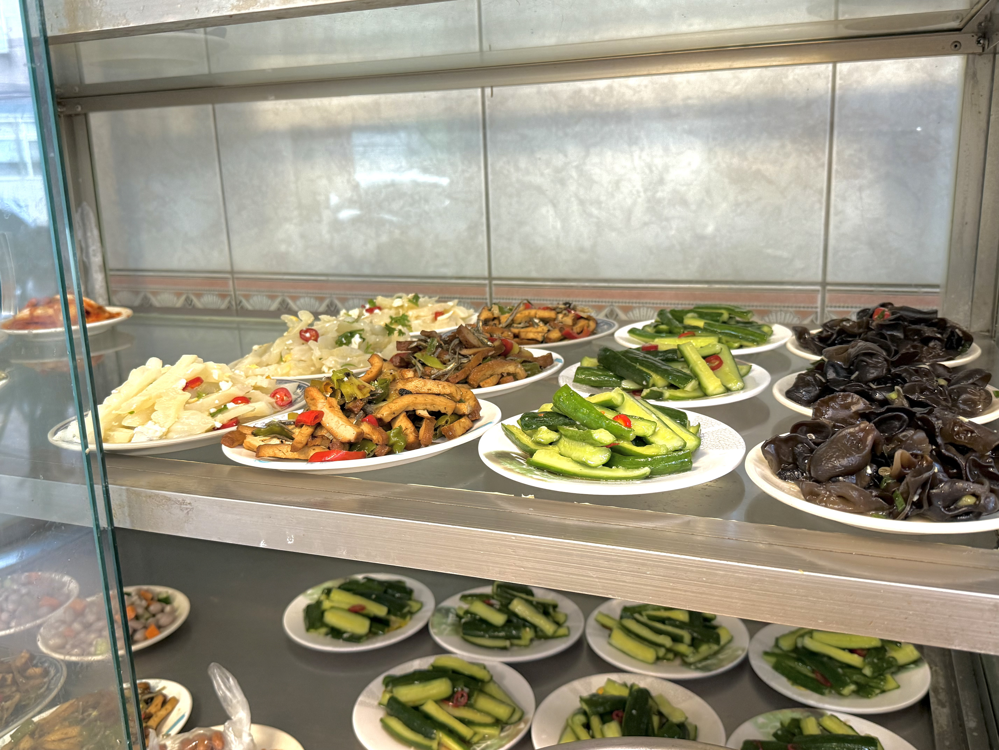

由於過往眷村文化的緣故，北投有很多知名的牛肉麵店，「吳家」、「志明」、「粟家」三家店是許多人來到北投的必訪行程。可能是因為地點優勢，吳家與志明的知名度及生意一直以來都勝過粟家，不過在我心中，粟家的地位無可取代，不是因為它的味道比別人好，單純因為粟家離我家最近。
從小到大，只要那天家裡沒有人煮晚餐，有非常高的可能性，家人會選擇買牛肉麵回來吃，而粟家又只需五分鐘的路程，自然變成我最常吃的牛肉麵。某種程度上，粟家形塑了我對牛肉麵的印象，這種印象久而久之化作一種飲食偏好，所以我牛肉麵幾乎只吃紅燒湯頭，也排斥寬厚的麵條。
粟家的菜單相當豐富，較多人會點紅燒或茄汁牛肉麵，當然如同許多牛肉麵店，粟家也有賣牛腩飯這種米食，但我個人認為，都來牛肉麵店了，點飯的人不知道在想什麼。另外，粟家的小菜選項也很豐富，各式滷味、涼拌菜都有，我最喜歡的是小黃瓜，味道清甜，口感爽脆。
如果要將牛肉麵分為湯、麵、肉三樣元素，粟家的能力值發展得很均勻。紅燒湯頭口味偏重，還沒加入辣油就有些微的刺激；麵的部分有五種選項，可以依照喜好挑選，沒有想法的話，店家會用一般麵條煮，口感與嚼勁適中；至於牛肉則大塊軟嫩，小碗會放四、五塊，連牙口不好的年長者也能品嚐。其實粟家雖然價格稍高，但至少份量很足，正常食量的人選小碗就好，大碗真的有點太大。